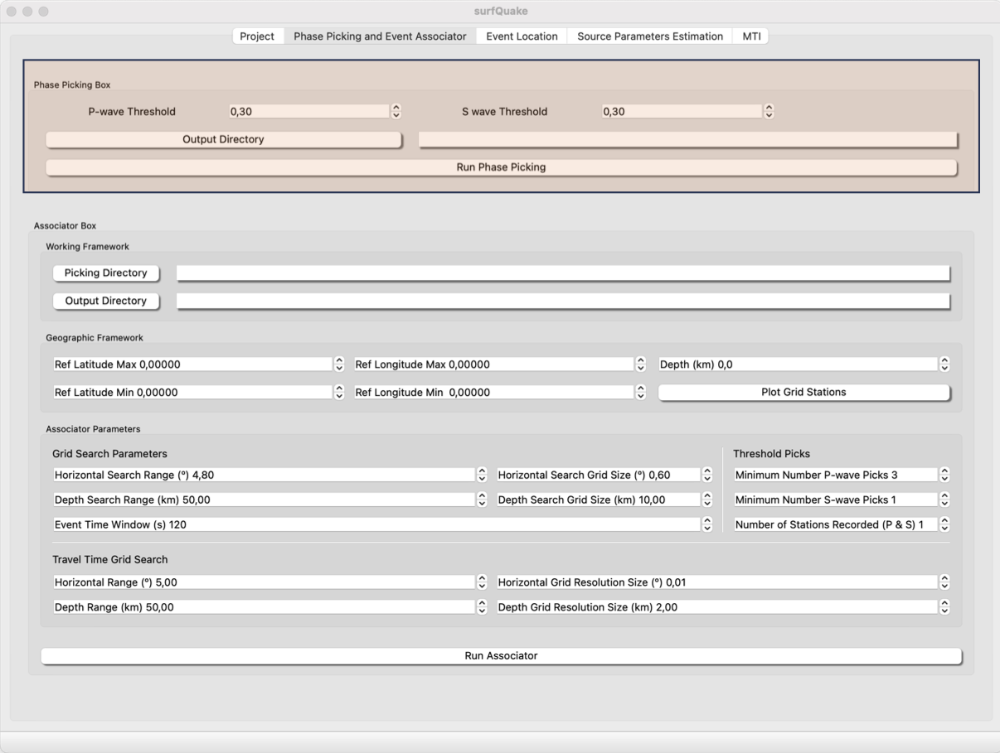

The Picking algorythm of surfQuake uses the Deep Neural Network of Phasenet (Liu et al., 2019) to estimate the arrival times of P- and S-wave. The arrival times are saved as a csv file and in daily folders to be ready to be used by the associator. Example of csv header:
date,fname,year,month,day,net,station,flag,tt,date_time,weight,amplitude,phase
20220131,CA.ARBS.P,2022,1,31,CA,ARBS,1,39383.88,2022-01-31T10:56:23.880000,0.5383206605911255,8557892.700195312,P
20220131,CA.ARBS.S,2022,1,31,CA,ARBS,1,85480.59,2022-01-31T23:44:40.590000,0.30124416947364807,8481788.269042969,S
Phase Picker GUI
We start with the GUI. This is a screenshot of the Project GUI.

Be sure you have just created a Project or you have loaded one. Then click on Run Auto Pick. This action will start the phase picker and will save the output in surfquake/data/picks ready to be used in the associator toolbox and surfquake/data/original_picks as csv file for direct reading.
Phase Picker from Library
Classes
class PhasenetISP:
def __init__(files, batch_size=3, highpass_filter=0.5, min_p_prob=0.3, min_s_prob=0.3, min_peak_distance=50, amplitude=False):
"""
Main class to initialize the picker
:param files: Dictionary with kewords addressing to seismograms file path and their corresponding metadata (i.e. sampling rate).
:type SurfProject: required (see Project section)
:param batch_size: Determines the number of samples in each batch (larger batch size uses more memory but can provide more accurate updates)
:type float:
:param highpass_filter: Lower corner frequency of highpass filter to be applied to the raw seismogram. Set to 0 to do not apply any pre-filter
:type float:
:param min_p_prob: Probability threshold for P pick
:type float:
:param min_s_prob: Probability threshold for S pick
:type float:
:param min_peak_distance: Minimum peak distance
:type float:
:param amplitude: if return amplitude value
:type float:
:returns:
:rtype: :class:`surfquakecore.phasenet.phasenet_handler.PhasenetISP`
"""
Methods
# instance method
def phasenet(self):
@staticmethod
def split_picks(picks):
"""
:param picks: A DataFrame with all pick information
:type picks: Pandas DataFrame
"""
@staticmethod
def convert2real(picks, pick_dir: str):
"""
:param picks: picks is output from method split_picks in mseedutils
:param pick_dir: directory outpur where phases are storaged
:return:
"""
@staticmethod
def save_original_picks(original_picks, original_p_dir):
"""
:param original_picks: picking output from phasenet (method split_picks in mseedutils)
:param original_p_dir: output to storage original_picks
:return:
"""
example using library
import os
from multiprocessing import freeze_support
from surfquakecore.phasenet.phasenet_handler import PhasenetUtils
from surfquakecore.phasenet.phasenet_handler import PhasenetISP
from surfquakecore.project.surf_project import SurfProject
### Set Paths to project file and output folder ###
path_to_project = "/Volumes/LaCie/test_surfquake_core/project/surfquake_project.pkl"
output_picks = '/Volumes/LaCie/test_surfquake_core/test_picking'
if __name__ == '__main__':
freeze_support()
# Load project
sp_loaded = SurfProject.load_project(path_to_project_file=path_to_project)
# Instantiate the class PhasenetISP
phISP = PhasenetISP(sp_loaded.project, amplitude=True, min_p_prob=0.90, min_s_prob=0.65)
# Running Stage
picks = phISP.phasenet()
""" PHASENET OUTPUT TO REAL INPUT """
picks_results = PhasenetUtils.split_picks(picks)
PhasenetUtils.convert2real(picks_results, output_picks)
PhasenetUtils.save_original_picks(picks_results, output_picks)
Phase picker from CLI
Overview
The Picking algorythm uses the Deep Neural Network of Phasenet to estimate the arrival times of P- and S-wave
Usage
>> surfquake pick -f [path to your project file] -d [path to your pick saving directory] -p [P-wave threshoold] -s [S-wave threshold] --verbose"
Interactive help
>> surfquake pick -h
Run Phase Picker from CLI
>> surfquake pick -f /Volumes/LaCie/test_surfquake_core/testing_data/projectssurfquake_project_new.pkl -d /Volumes/LaCie/test_surfquake_core/testing_data/picks -p 0.3 -s 0.3 --verbose